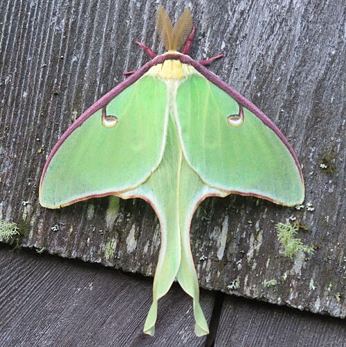
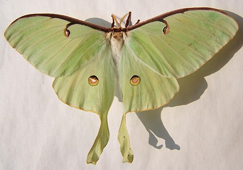

Сатурния луна, Лунный мотылек (лат. Actias luna) — вид павлиноглазок из семейства Saturniidae.
Описание
У мотылька лимонно-зеленые крылья и белое тело. Его гусеницы тоже зеленые. Его типичный размах крыльев составляет примерно 114 мм (4,5 дюйма), но размах крыльев может превышать 178 мм (7,0 дюйма), что делает этот вид одним из самых крупных мотыльков, обитающих в Северной Америке.
В качестве защитных механизмов личинки издают щелчки в качестве предупреждения, а также могут отрыгивать содержимое кишечника, что, как было доказано, оказывает сдерживающий эффект на различных хищников. Считается, что удлиненные хвосты задних крыльев сбивают с толку эхолокацию, используемую хищными летучими мышами.
Яйца, прикрепленные небольшими группами к нижней стороне листьев, пятнисто-белые с коричневыми вкраплениями, слегка овальные, примерно 1,5 миллиметра в диаметре. Личинки преимущественно зеленые, с редкими волосками. Первая стадия развития, вылупившись из яйца, достигает длины 6–8 мм (0,24–0,31 дюйма), вторая 9–10 мм (0,35–0,39 дюйма), третья 12–16 мм (0,47–0,63 дюйма) и четвертая 23–26 мм (0,91–1,02 дюйма). Пятая (последняя) стадия развития вырастает примерно до 70–90 мм (2,8–3,5 дюйма) в длину. По бокам личинок четвертой и пятой стадий развития могут располагаться маленькие разноцветные точки – желтые или пурпурные. Незадолго до окукливания личинки могут приобретать красновато-коричневый цвет. Личинки пятой стадии спускаются на землю и с помощью шелка обматывают кокон опавшими листьями. Имаго (крылатые, половозрелые особи), которых часто называют взрослыми бабочками, появляются из куколок с маленькими, сморщенными крыльями, прижатыми к телу. В течение нескольких часов крылья расправляются и становятся полноценными. Размах крыльев обычно составляет 8–11,5 см (3,1–4,5 дюйма), а в редких случаях достигает 17,78 см (7,00 дюйма). Самки и самцы похожи по размеру и внешнему виду: зеленые крылья, глазчатые пятна на передних и задних крыльях, а также длинные, иногда слегка изогнутые хвосты, отходящие от заднего края задних крыльев. Тело белое и покрыто волосками. У взрослых особей рудиментарный ротовой аппарат, и они не питаются. Вся энергия, необходимая для размножения, высвобождается из жировых запасов гусеницы. Передний край переднего крыла темного цвета и толстый, его толщина уменьшается от груди к кончику крыла. Цвет может варьироваться от бордового до коричневого. Глазки, по одному на каждом крыле, имеют овальную форму на передних крыльях и круглую — на задних. Вокруг каждого глазка могут быть черные, синие, красные, желтые, зеленые или белые дуги. Считается, что глазки сбивают с толку потенциальных хищников.
Распостранение
Лунная моль встречается в Северной Америке, к востоку от Великих равнин в США – Флорида до Мэна, а также от Саскачевана на восток через центральный Квебек до Новой Шотландии в Канаде. Лунных молей также редко можно встретить в Западной Европе в качестве залетных особей.